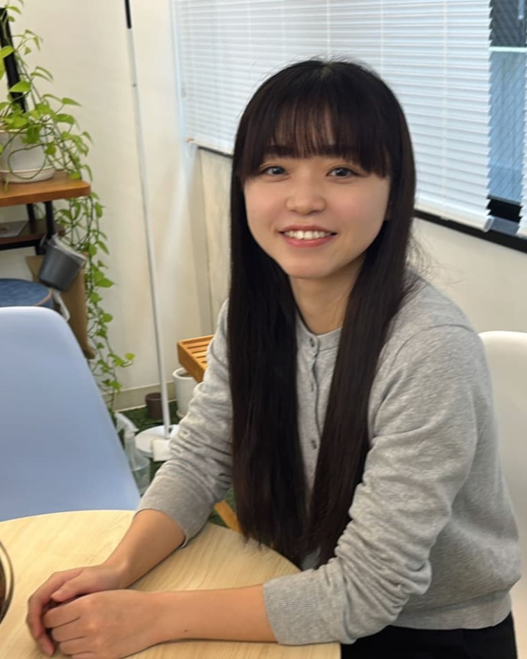

社員の声

S.N
2025年入社 人文社会学部出身
入社前の自分
ー学生時代はどんなことをしていましたか？
アルバイトは長く続いたものから、すぐ辞めてしまったものもあります。色々なアルバイトを経験したことで、自分の適性を見つけるきっかけになったと感じています。
志望・入社理由
ー入社理由を教えてください。
また、インターンシップに参加した際に、社員の方々の優しく温かい人柄に触れ、「この人たちと一緒に働きたい」と感じたことも、大きな決め手となりました。
業務について
ー現在の仕事内容を教えてください。
まだ採用したことのない技術については、その技術が妥当なのか、お客様にどのようなメリット・デメリットがあるのかなど、専門的な視点から慎重に検討する必要があります。
自分一人の知識だけでは判断が難しい場合もあるため、その際は社内レビューを行い、お客様に安心していただけるような提案ができるよう心がけています。
ー仕事を進める上で大切にしていることは何ですか？
システム開発では、文章や会話だけでは認識のずれが発生しやすいため、図にして可視化することで、仕様の矛盾点や検討漏れに早い段階で気付けるよう工夫しています。「複雑な内容を分かりやすく整理して伝えること」を大切にしながら業務に取り組んでいます。
入社後の発見
ー入社前のイメージと違ったことはありましたか？
しかし実際に働き始めてみると、プログラミングスキルは確かに重要であるものの、それ以上に求められるのは、相手の意図や課題を正しく理解する力や、複雑な情報を整理して分かりやすく伝える力であることに気付きました。
入社前に抱いていたイメージとのギャップはありましたが、自分の強みを活かせる場が探せば探すほどあると感じています。
ーやりがいを感じるのはどんな時ですか？
関係者それぞれの考えや要望をすり合わせながら、最適な形に落とし込んでいくプロセスに面白さを感じています。
また、自分自身がこれまでできなかったことを一つ一つ克服し、出来ることが増えていくことで、お客様や仲間の力になれていると実感できることにも、大きな達成感があります。